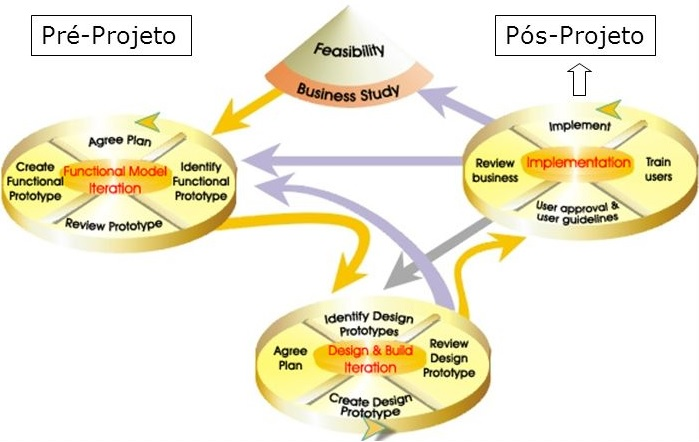

É uma estrutura ágil, que trata todo o ciclo de vida de um projeto, até os impactos que as empresas terão em sua implantação. Tendo como objetivo o alinhamento de todo o projeto, para uma resposta imediata e consistente para o negócio. A estrutura é baseada em quatro princípios: estudo de viabilidade e negócios, iteração de modelo e protótipo funcional, iteração de design e construção e implementação.
Surgiu em 1994 por uma associação de empresários e especialista formados na área de engenharia de softwares, com o objetivo de desenvolver e promover um desenvolvimento rápido de aplicações, criando ferramentas e combinando as melhores experiências de empresas como British Airways, American Express, Oracle entre outras.
Em 2006, Dynamic Systems development method teve a versão 4.2 publicada, para os usuários visualizar e utilizar.
Em 2014, o Dynamic Systems development method teve o seu manual publicado.
Em 2016, foi batizado como O Agile Business Consortium organização sem fins lucrativos
O DSDM tem oito princípios, com a finalidade de conceituar a equipe e preparar mentalmente para que consigam entregar o que se é pedido de forma consistente, os princípios são eles:
1º. Concentre-se na necessidade de negócio.
2º. Entregar a tempo
3º. Colaborar.
4º. Comprometer a qualidade nunca.
5º. Construir gradualmente a partir de bases sólidas.
6º. Desenvolver de forma iterativa.
7º. Comunicar de forma contínua e claramente.
8º. Demonstrar controle.
• Timeboxing: O projeto e divido, cada parte da divisão tem seu orçamento e sua data de entrega.
• MoSCoW: Prioriza alguns itens do projeto ou exigências.
• Prototipagem: Criação de protótipos do sistema em desenvolvimento, que permite a descobertas de falhas e possíveis erros que pode ser corrigidos para versões futuras.
• Teste: Garante a qualidade e funcionalidade do sistema desenvolvido.
• Workshop: Reuni os atores do projeto para discutir requisitos, funcionalidades e compreensão mútua.
• Modelagem: Ajuda a visualizar um domínio de negócios e melhorar a compreensão. Produz uma representação esquemática de aspectos específicos do sistema ou área de negócio o que está sendo desenvolvido.
• Gerenciamento de configuração: No desenvolvimento de múltiplos sistemas ao mesmo, todos os prazos tem que ser mantido sendo entregues de forma incremental no final de cada tempo-box, todos os processos precisam ser bem gerida para a sua conclusão
Agilidade na entrega dos produtos
Os desenvolvedores têm acesso fácil aos usuários
Todos os projetos são desenvolvidos no prazo e confiáveis.
Mudanças dramáticas na cultura da empresa
Necessários recursos financeiros para implementas
Não é ideal para pequenas empresas
Qual o objetivo de um DSDM em uma empresa?